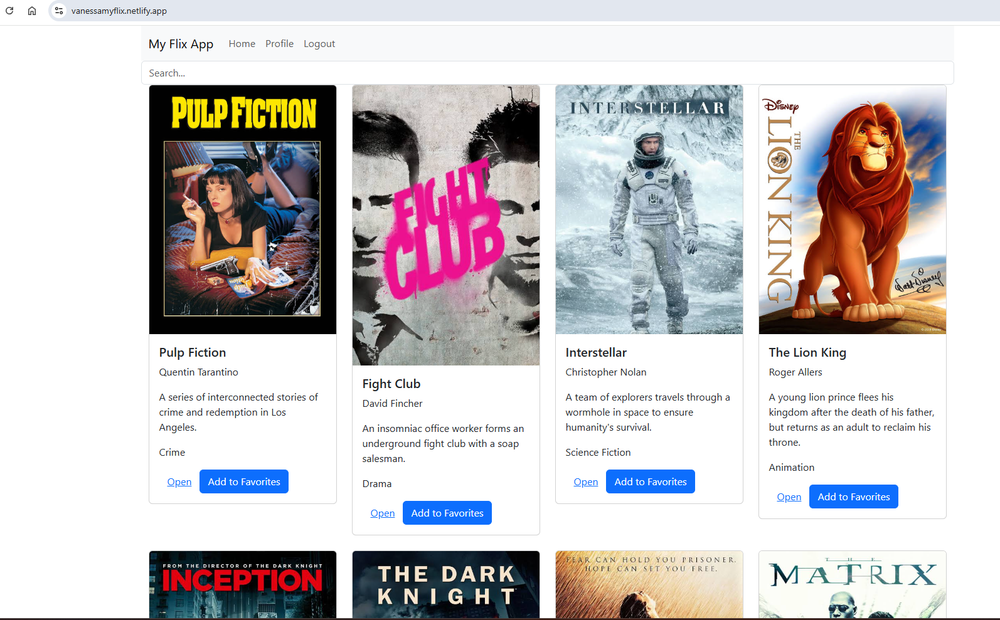
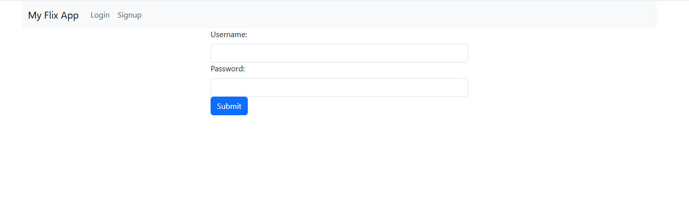
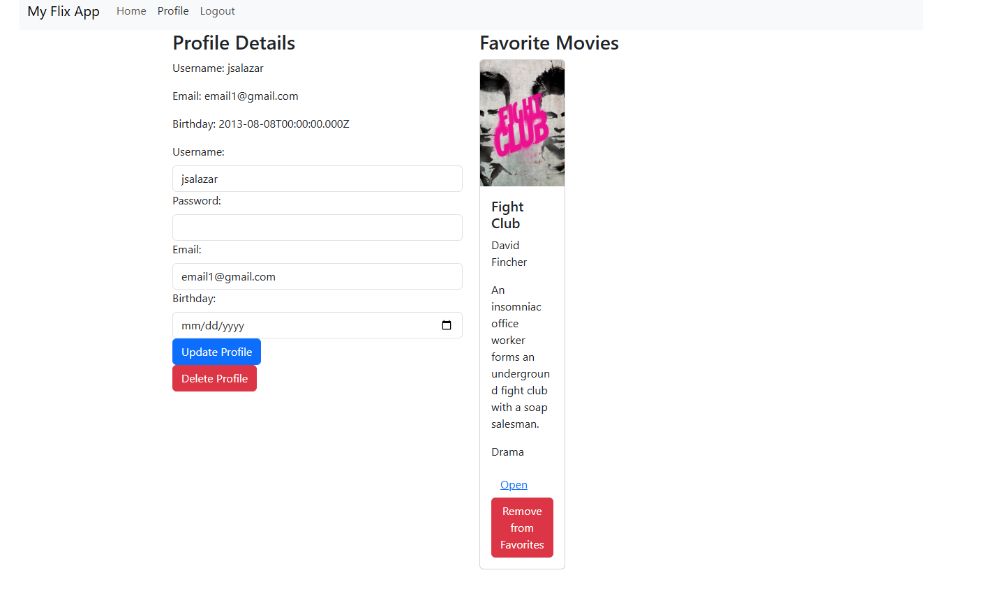

Movie App Case Study
Project Overview
The myFlix movie app is a single-page web application that provides users with access to information about movies, directors, and genres.
Users can create a profile, login, and view movie information such as, the genre, the description, and the director of the movie. Users are also able to update their profile information and add and remove movies from their favorites list.
My role for this project was to create the server-side and client-side from scratch and link both together to have a complete web application.
The duration of the this project took about 2 weeks. I spent one week working on the server-side and creating the database for the movies. The second week I spent working on the client side of the project, creating the different views and adding the API Intergration to have a complete full-stack project.
Project Goals
- To create a single-page web application that allows users to view and interact with movie data.
- To implement user authentication and profile management.
- To provide a responsive and user-friendly interface.
- To utilize modern web technologies for both the client-side and server-side development.
Technical Details
Tools & Technologies Used
- React.js for building the user interface
- Redux for state management
- Node.js and Express for the backend server
- MongoDB for the database
- RESTful API for data communication
Application Architecture
Server-side
I created a RESTful API using Node.js and Express. The API interacts with a non-relational database, MongoDB. The server handles requests for movie data, user profiles, and authentication. The API can be accessed via commonly used HTTP methods like GET or POST. To test the API, I used Postman to send requests and verify the responses. I also included user authentication and authorization code in the form of basic HTTP authenticationand JWT authentication

Client-Side
After finishing the server-side, I started to build the interface users would need when making requests to, and receiving responses from the server-side. The client-side is built using React.js, which allows for a dynamic and responsive user interface. I used React Router to manage navigation between different views of the application. The client-side communicates with the server-side API to fetch movie data and user profiles. I also implemented Redux for state management, allowing for efficient data handling across components.
 Component Structure
The application is structured into several components, including:
- MainView: The main component that renders the application.
- MovieView: Displays a list of movies.
- MovieCard: Shows detailed information about a selected movie.
- ProfileView: Allows users to view and update their profile information.
- LoginView: Handles user authentication.
- SignupView: Allows new users to register.
API Integration
The application interacts with a RESTful API to fetch movie data, user profiles, and handle authentication.
Challenges & Solutions
Developing myFlix presented several interesting technical challenges that required thoughtful solutions to ensure a robust and user-friendly application. Overcoming these hurdles significantly enhanced my understanding of full-stack development.
Challenge 1: Securing User Authentication and Authorization
Initially, I considered basic HTTP authentication for user logins. However, for a more secure, scalable, and stateless application, a more robust token-based system was necessary to protect user data and maintain a smooth user experience across sessions without repeatedly sending credentials.
Solution: Implementing JWT Authentication
To address this, I integrated **JSON Web Tokens (JWT)** for authentication. Upon successful login, the server generates a cryptographically signed JWT containing user-specific data, which is then sent to the client. This token is securely stored (e.g., in local storage) and included as a bearer token in the `Authorization` header of subsequent API requests. On the server-side, a dedicated middleware verifies the token's authenticity and expiration, and extracts user information, ensuring that only authenticated and authorized users can access protected routes. This significantly bolstered security and improved the overall user experience by enabling persistent sessions without constant re-authentication.
Challenge 2: Efficient State Management Across Disparate Components
As the application grew and different components (e.g., `MovieCard`, `ProfileView`) needed to access and update shared data like user favorite lists or movie details, managing the application's state became increasingly complex. Directly passing props through multiple layers of components (known as "prop drilling") would have led to convoluted, hard-to-debug, and unmaintainable code.
Solution: Leveraging Redux for Centralized State Management
To overcome state management complexities, I adopted **Redux** for centralized state management. By defining a single, immutable store, all application data—including user authentication status, favorite movies, and the main movie list—could be managed in one predictable location. Reducers were meticulously designed to handle state transitions based on dispatched actions, ensuring data consistency and simplifying updates. This approach dramatically streamlined data flow, made debugging more straightforward with the Redux DevTools, and significantly improved the overall maintainability and scalability of the client-side application, especially as new features were introduced.
Challenge 3: Cross-Origin Resource Sharing (CORS) Issues During API Integration
During local development, a common hurdle encountered was Cross-Origin Resource Sharing (CORS) errors. These occurred when the React client (typically running on `localhost:3000`) attempted to make API requests to the Node.js backend (running on a different port, e.g., `localhost:8080`). Browser security policies prevent such cross-origin requests by default, leading to blocked responses.
Solution: Configuring CORS on the Server and Client-side Proxy
To resolve CORS issues, I implemented a two-pronged approach. On the server-side, I used the `cors` npm package in my Express application to explicitly configure the appropriate CORS headers, allowing requests from the client's origin. For local development convenience and to provide a more seamless development experience, I also utilized the proxy feature in the React application's `package.json`. This redirected API requests from the client's development server through the proxy to the backend, effectively bypassing the browser's CORS restrictions during development and streamlining the integration process.
Future Improvements
Future improvements could include:
- Adding more advanced search and filter functionalities for movies.
- Implementing a review system for users to rate and review movies.
- Enhancing the user interface with more interactive elements.
Conclusion
The myFlix movie app successfully provides users with a platform to explore and interact with movie data. The application is built using modern web technologies, ensuring a responsive and user-friendly experience.
This project helped reinforce the importance of planning component architecture before implementation. I also gained valuable experience in full-stack development, from setting up the server-side API to creating a dynamic client-side application.
This project helped improve my skills in building single-page applications, implementing user authentication, integrating front-end applications with RESTful APIs, along with many other skills.
For more details, you can view the source code on GitHub.